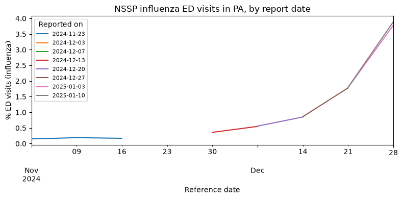

Understanding and accessing versioned data#
The Delphi Epidata API records not just each signal’s estimate for a given location on a given day, but also when that estimate was made, and all updates to that estimate. This is particularly relevant for data sources that have updates or additional information coming in, due to reporting and data flow processes.
For example, let’s look at the emergency department visits
signal
from the nssp source, which estimates the percentage of emergency department
visits that are influenza-related. Consider a result row with reference_time
2024-12-07 for geo_values="pa". This is an estimate for Pennsylvania on
December 7, 2024. That estimate was first reported (published) on December
13, 2024, the delay coming from a combination of:
time taken by our data partner to aggregate and collect the data
time taken by the Delphi Epidata API to ingest the data provided.
Later, the estimate for December 7th was updated, as additional visit data from December 7th arrived at our source and was reported to us. This constitutes a new version of the data. Let’s walk through how to look at that below.
Data known “as of” a specific date#
By default, epidata_snapshot fetches the most recent data available. This is
the best option for users who simply want to graph the latest data or construct
dashboards. But if we are interested in knowing when data was reported, we
can request the data that was available as of a specific date, using the
snapshot_date argument:
from epidatpy import EpiDataContext, EpiRange
epidata = EpiDataContext(use_cache=False)
# The percent of ED visits due to influenza from the NSSP source, for
# 2024-12-07, as of 2024-12-14
past_snapshot = epidata.epidata_snapshot(
source="nssp",
signals="pct_ed_visits_influenza",
geo_type="state",
geo_values="pa",
reference_time="2024-12-07",
snapshot_date="2024-12-14",
).df()
past_snapshot
| signal | report_time | geo_type | geo_value | fill_method | reference_time | value | |
|---|---|---|---|---|---|---|---|
| 0 | pct_ed_visits_influenza | 2024-12-13 12:00:00+00:00 | state | pa | source | 2024-12-07 | 0.55 |
This shows the estimate that was known as of December 14. If we don’t specify
snapshot_date, we get the most recent estimate available:
latest_snapshot = epidata.epidata_snapshot(
source="nssp",
signals="pct_ed_visits_influenza",
geo_type="state",
geo_values="pa",
reference_time="2024-12-07",
).df()
latest_snapshot
| signal | report_time | geo_type | geo_value | fill_method | reference_time | value | |
|---|---|---|---|---|---|---|---|
| 0 | pct_ed_visits_influenza | 2025-01-17 12:00:00+00:00 | state | pa | source | 2024-12-07 | 0.57 |
print(f"as of 2024-12-14: {past_snapshot['value'].iloc[0]:.2f}%")
print(f"latest: {latest_snapshot['value'].iloc[0]:.2f}%")
as of 2024-12-14: 0.55%
latest: 0.57%
Note the change in the estimate, reflecting new data that became available after December 14 about visits occurring on December 7. This illustrates the importance of version tracking, particularly for forecasting tasks. To backtest a forecasting model on past data, it is important to use the data that would have been available at the time the model was or would have been fit, not data that arrived much later.
snapshot_date accepts a date ("2024-12-14", 20241214, or a
datetime.date) or an exact instant: a datetime or a UTC timestamp string
such as "2024-12-14T13:45:00Z".
Multiple versions and revision histories#
Unlike epidata_snapshot, epidata_archive does not default to the latest
data: by using it with the report_time argument, we can request all versions
reported in a certain time period, and if report_time is omitted entirely, we
get every version ever reported.
# All versions of the percent of ED visits due to influenza from the NSSP
# source, for 2024-12-07, reported between 2024-12-01 and 2025-01-15
archive_data = epidata.epidata_archive(
source="nssp",
signals="pct_ed_visits_influenza",
geo_type="state",
geo_values="pa",
reference_time="2024-12-07",
report_time=EpiRange("2024-12-01", "2025-01-15"),
).df()
archive_data
| signal | report_time | geo_type | geo_value | fill_method | reference_time | value | |
|---|---|---|---|---|---|---|---|
| 0 | pct_ed_visits_influenza | 2024-12-20 12:00:00+00:00 | state | pa | source | 2024-12-07 | 0.56 |
| 1 | pct_ed_visits_influenza | 2024-12-13 12:00:00+00:00 | state | pa | source | 2024-12-07 | 0.55 |
This estimate was updated several times as new data for December 7th arrived.
Note that these results include only data reported between (inclusive) 2024-12-01 and 2025-01-15. If a value was first reported outside this range and never updated, a query for reports between 2024-12-01 and 2025-01-15 will not include that value among its results.
The report_time column is a timezone-aware UTC timestamp
(datetime64[ns, UTC]), since the API records the instant at which each
version was published.
The report_time argument also accepts comparison operators (<, <=, >,
>=), each followed by a date or a UTC timestamp like
"<=2025-01-01T13:45:00Z". Bare dates and the = operator are rejected: if
you need data as of a single date, use epidata_snapshot(snapshot_date=...)
instead.
# Versions reported strictly before 2025-01-01
epidata.epidata_archive(
source="nssp",
signals="pct_ed_visits_influenza",
geo_type="state",
geo_values="pa",
reference_time="2024-12-07",
report_time="<2025-01-01",
).df()
| signal | report_time | geo_type | geo_value | fill_method | reference_time | value | |
|---|---|---|---|---|---|---|---|
| 0 | pct_ed_visits_influenza | 2024-12-20 12:00:00+00:00 | state | pa | source | 2024-12-07 | 0.56 |
| 1 | pct_ed_visits_influenza | 2024-12-13 12:00:00+00:00 | state | pa | source | 2024-12-07 | 0.55 |
# Versions reported strictly after 2024-12-13
epidata.epidata_archive(
source="nssp",
signals="pct_ed_visits_influenza",
geo_type="state",
geo_values="pa",
reference_time="2024-12-07",
report_time=">2024-12-13",
).df()
| signal | report_time | geo_type | geo_value | fill_method | reference_time | value | |
|---|---|---|---|---|---|---|---|
| 0 | pct_ed_visits_influenza | 2025-01-17 12:00:00+00:00 | state | pa | source | 2024-12-07 | 0.57 |
| 1 | pct_ed_visits_influenza | 2024-12-20 12:00:00+00:00 | state | pa | source | 2024-12-07 | 0.56 |
Calculating reporting lag#
In the V5 API, reporting lag is computed directly as the difference between
report_time (the publication date) and reference_time (the observation
date). Since report_time is timezone-aware and reference_time is not, drop
the timezone before subtracting:
archive_with_lag = archive_data.assign(
lag_days=(archive_data["report_time"].dt.tz_localize(None) - archive_data["reference_time"]).dt.days
)[["signal", "reference_time", "report_time", "lag_days", "value"]]
archive_with_lag
| signal | reference_time | report_time | lag_days | value | |
|---|---|---|---|---|---|
| 0 | pct_ed_visits_influenza | 2024-12-07 | 2024-12-20 12:00:00+00:00 | 13 | 0.56 |
| 1 | pct_ed_visits_influenza | 2024-12-07 | 2024-12-13 12:00:00+00:00 | 6 | 0.55 |
If your analysis requires filtering data to a specific maximum reporting lag
(for example, simulating data available with at most a 14-day delay), filter by
lag_days:
archive_with_lag[archive_with_lag["lag_days"] <= 14]
| signal | reference_time | report_time | lag_days | value | |
|---|---|---|---|---|---|
| 0 | pct_ed_visits_influenza | 2024-12-07 | 2024-12-20 12:00:00+00:00 | 13 | 0.56 |
| 1 | pct_ed_visits_influenza | 2024-12-07 | 2024-12-13 12:00:00+00:00 | 6 | 0.55 |
Plotting a revision history#
Fetching the archive for a range of reference dates lets us see how the whole time series was revised from one report to the next:
import matplotlib.pyplot as plt
revisions = epidata.epidata_archive(
source="nssp",
signals="pct_ed_visits_influenza",
geo_type="state",
geo_values="pa",
reference_time=EpiRange("2024-11-01", "2024-12-28"),
report_time=EpiRange("2024-11-15", "2025-01-15"),
).df()
revisions["report_date"] = revisions["report_time"].dt.date
fig, ax = plt.subplots(figsize=(8, 4))
revisions.pivot_table(values="value", index="reference_time", columns="report_date").plot(
ax=ax, xlabel="Reference date", ylabel="% ED visits (influenza)", linewidth=1.5
)
ax.legend(title="Reported on", fontsize=8)
ax.set_title("NSSP influenza ED visits in PA, by report date")
plt.tight_layout()
plt.show()

For sources that have not yet transitioned from the legacy V4 API, versioning
is specified differently (as_of, issues, and lag on pub_covidcast). See
the migration guide for the argument and column
mappings between V4 and V5.